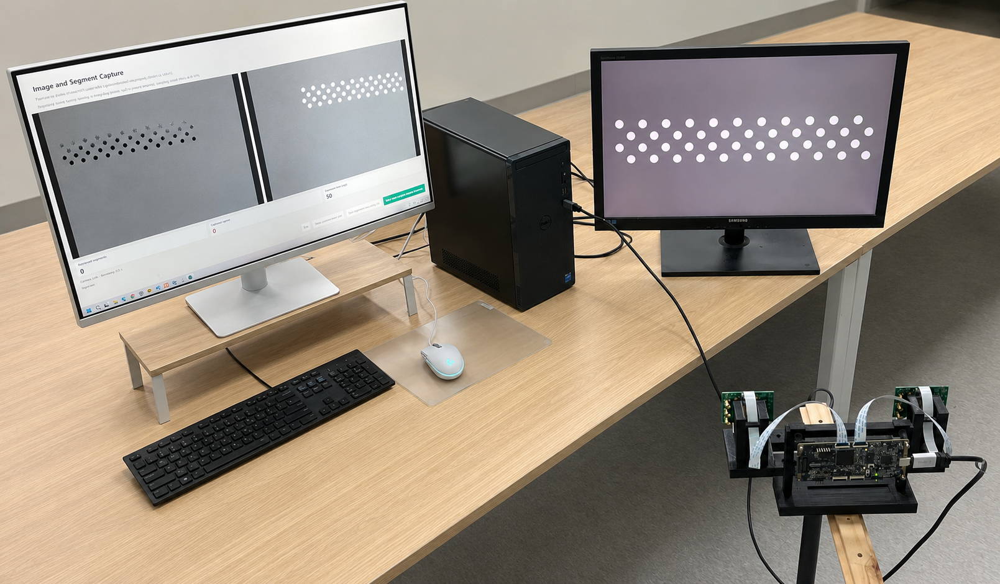
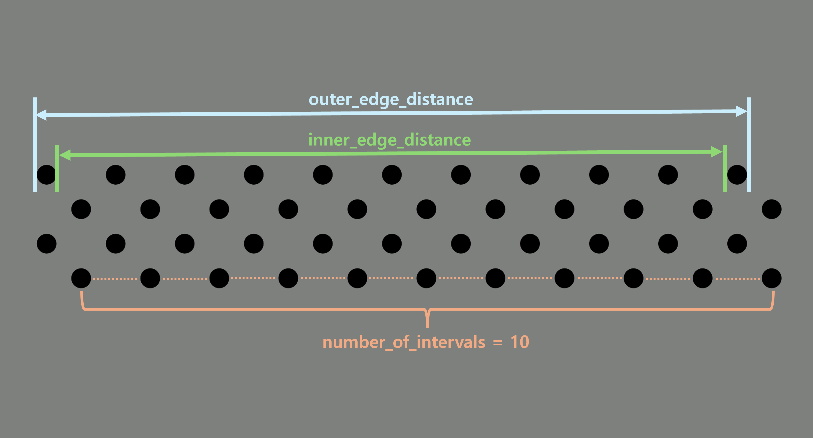
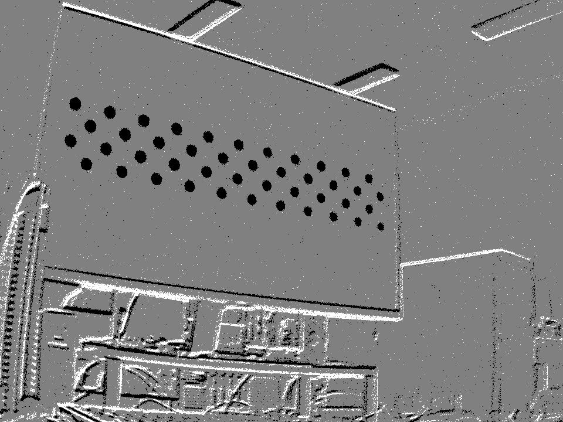
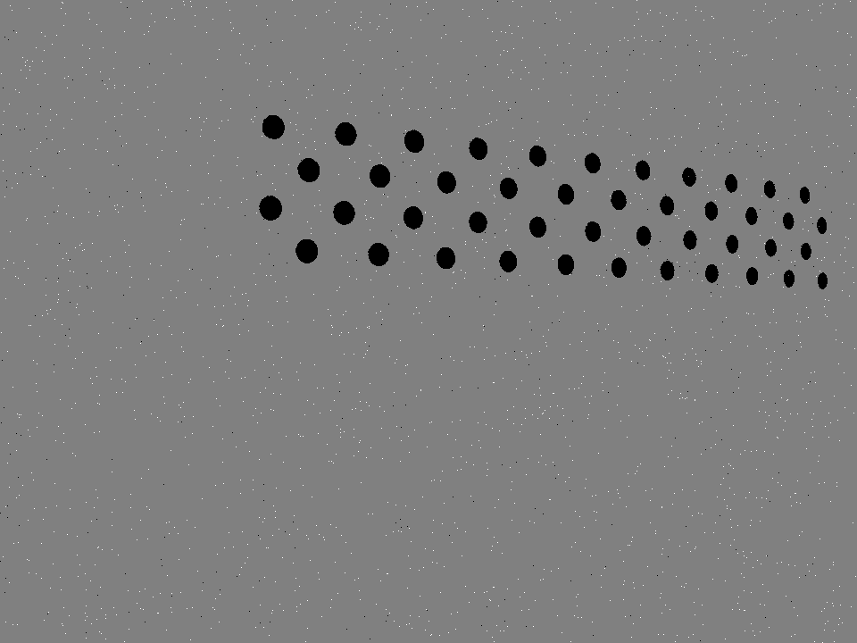

3. 촬영 환경과 준비
좋은 NRV DVS 캘리브레이션 데이터는 안정적인 촬영 환경에서 나옵니다. 촬영 전에 NRV DVS, 용도가 구분된 모니터, 필요한 소프트웨어, 패턴의 실제 치수와 고정 조건을 먼저 맞춰 두어야 합니다. 이렇게 준비해야 blinking circle grid에서 발생하는 이벤트를 깨끗하게 기록할 수 있습니다.
3.1 필요 장비
모노 또는 스테레오 촬영을 시작하기 전에 다음 장비를 준비합니다. 각 장비는 패턴을 명확히 표시하고 이벤트 기록을 안정적으로 유지하기 위한 역할을 담당합니다.
NRV DVS
깜빡이는 타깃에서 발생하는 ON/OFF 이벤트를 기록합니다.
카메라 제어 PC
카메라를 연결하고 데이터 기록 소프트웨어를 실행합니다.
카메라 제어 모니터
카메라 연결, 녹화 제어와 실시간 이벤트 출력을 확인합니다.
Blinking 패턴 모니터
Blinking circle grid를 표시하여 캘리브레이션 타깃으로 사용합니다.
삼각대 또는 고정 카메라 마운트
기록 중 카메라의 이동과 진동을 방지합니다.
자 / 측정 도구
타깃 모니터에 표시된 원 사이의 실제 물리 간격을 측정합니다.
데이터 기록 소프트웨어
이후 포인트 선택과 캘리브레이션에 사용할 이벤트 스트림을 기록합니다.
카메라를 조작하고 녹화를 시작·종료하며 이벤트 출력을 확인합니다.
촬영 중 blinking circle grid만 전체 화면으로 표시합니다.
Blinking 패턴 전용 모니터를 별도로 사용하는 것이 좋습니다. 이렇게 하면 카메라 제어창이나 녹화창, 다른 UI가 패턴을 가리지 않도록 캘리브레이션 타깃을 전체 화면으로 유지할 수 있습니다.

3.2 필수 소프트웨어 다운로드
촬영 전에 패턴 생성기를 내려받습니다. 이후 단계에서 사용할 자동 캘리브레이션 프로그램도 미리 준비할 수 있도록 함께 안내합니다.
Blinking Circle Grid Generator
타깃 모니터에 blinking asymmetric circle grid를 표시합니다. 다운로드와 사용 방법은 프로젝트 저장소에서 확인할 수 있습니다.
Blinking Circle Grid Generator 열기 ↗자동 캘리브레이션 프로그램
캘리브레이션 포인트를 검출하고 모노 또는 스테레오 캘리브레이션 파라미터를 계산합니다. 자세한 사용법은 별도의 프로그램 설명에서 이어서 정리할 수 있습니다.
[다운로드 링크 추가 예정]3.3 원 간격 측정
캘리브레이션 프로그램에는 서로 이웃한 원 중심 사이의 실제 물리 거리가 필요합니다. 이 값은 패턴 생성기에 설정한 픽셀 간격이 아닙니다. 실제 크기는 모니터 크기, 해상도와 화면 배율에 따라 달라지므로 캘리브레이션에 사용할 실제 blinking 패턴 모니터에서 직접 측정해야 합니다. 타깃 모니터나 표시 환경이 바뀌면 그 구성에 맞게 다시 측정해야 합니다.
화면에 표시된 각 원의 정확한 중심에 자를 맞추기는 어렵습니다. 또한 한 칸 간격만 재면 작은 자 눈금 오차가 결과에 크게 반영됩니다. 그래서 여러 간격을 한 번에 포함하도록 멀리 떨어진 두 원을 기준으로 바깥쪽 가장자리 거리와 안쪽 가장자리 거리를 측정하고, 평균을 낸 뒤 간격 개수로 나눕니다. 이렇게 하면 원 간격 값을 더 안정적으로 얻을 수 있습니다.
- 1
캘리브레이션 타깃으로 사용할 모니터에 blinking circle grid를 표시합니다.
- 2
같은 행에서 양 끝에 있는 두 원을 선택합니다.
- 3
선택한 두 원의 바깥쪽 가장자리 사이 거리를 측정합니다.
- 4
같은 두 원의 안쪽 가장자리 사이 거리를 측정합니다.
- 5
두 측정값을 평균하여 양 끝 원 사이의 중심 간 거리를 추정합니다.
- 6
선택한 두 원 사이에 존재하는 원 간격의 개수를 셉니다.
- 7
중심 간 거리를 간격 개수로 나눕니다.
- 8
계산 결과를 캘리브레이션 프로그램의 circle spacing 값으로 사용합니다.

3.4 Blinking 패턴 모니터 설정
Blinking 패턴 모니터는 실제 평면 캘리브레이션 타깃으로 취급해야 합니다. 화면을 먼저 설정한 뒤 전체 기록 과정에서 움직이지 않도록 고정합니다.
- Blinking circle grid를 전체 화면으로 표시합니다.
- 평면 모니터를 사용합니다. 곡면 모니터는 필요한 평면 타깃을 표현하지 못합니다.
- 화면 경계에서 패턴 일부가 잘리지 않았는지 확인합니다.
- NRV DVS 이벤트 영상에서 각 원이 명확하게 분리되도록 원 크기와 간격을 조절합니다.
- 촬영하는 동안 모니터를 안정적으로 고정합니다.
- 패턴 위에 다른 창, UI, 알림 또는 마우스 커서가 보이지 않게 합니다.

3.5 카메라 고정의 중요성
캘리브레이션 데이터를 기록할 때는 NRV DVS를 삼각대 또는 단단한 마운트에 고정합니다. 이 단계의 목적은 움직이는 상황에서도 잘 동작하는지 시험하는 것이 아니라, 이후 측정이나 재구성 단계의 정확도를 높이기 위한 기준 데이터를 먼저 얻는 것입니다.
카메라 흔들림은 영상의 여러 위치에서 동시에 밝기 변화를 만들고, 장면 전체에 불필요한 이벤트를 발생시킵니다. 이때 원 형상이 늘어나거나 찌그러져 보일 수 있고, 정지 상태에서 기록한 데이터보다 원 중심 검출 품질이 낮아질 수 있습니다. 따라서 기록 중에는 카메라, 모니터, 케이블과 주변 물체가 최대한 움직이지 않도록 유지합니다.
NRV DVS는 CIS 카메라처럼 프레임 기반의 일반적인 모션 블러를 만들지는 않습니다. 하지만 카메라가 미세하게 움직이면 모니터 픽셀에서 나온 광선이 센서 픽셀에 맺히는 위치가 시간에 따라 조금씩 달라집니다. 원 경계 주변에서는 이런 작은 투영 위치 변화만으로도 이벤트 묶음이 퍼지고, 원 중심 검출에 악영향을 줄 수 있습니다.
움직이는 상황에서도 캘리브레이션이 잘 되어야 하는 것 아닌가라고 생각할 수 있지만, 캘리브레이션은 정확한 좌표 계산을 위해 먼저 수행하는 선행 기준 작업입니다. 그래서 캘리브레이션 데이터는 먼저 통제되고 안정적인 조건에서 기록하는 것이 좋습니다.

불안정한 촬영: 주변 장면 이벤트가 패턴과 함께 섞입니다.
고정된 촬영: 원 그리드 이벤트가 깔끔하게 분리됩니다.3.6 촬영 품질 체크리스트
각 데이터를 기록하기 전에 실시간 이벤트 영상과 실제 설치 상태를 다음 항목으로 확인합니다.
- NRV DVS 시야에 전체 circle grid가 보입니까?
- 모든 원이 서로 명확하게 분리되어 있습니까?
- 원 경계 주위에서 ON/OFF 이벤트가 선명하게 발생합니까?
- 영상 경계에서 잘린 원이 없습니까?
- Blinking 패턴이 평면 모니터에 표시되어 있습니까?
- 카메라가 손떨림이나 진동 없이 고정되어 있습니까?
- 촬영 중 모니터가 움직이지 않고 안정적으로 고정되어 있습니까?
- 불필요한 이벤트를 피하도록 주변 물체가 정지해 있습니까?
- 손, 케이블 또는 반사 물체가 카메라 시야에서 제거되어 있습니까?
- 이벤트 영상이 주로 blinking circle grid에서 발생합니까?
촬영 환경 준비가 끝나면 다음 단계에서는 패턴 표시부터 데이터 선택과 캘리브레이션 계산까지 전체 캘리브레이션 과정을 순서대로 진행합니다.
검색어와 일치하는 소제목이 없습니다.
이 글은 NRV의 지원을 받아 작성했습니다. 공식 NRV docs에는 영문 버전이 제공됩니다.